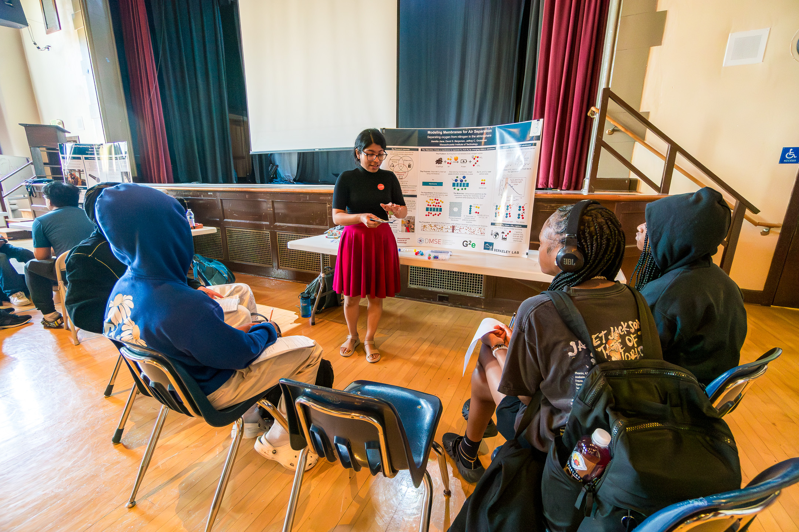

- Presented my research to eighth grade students as a part of a Reverse Science Fair to promote STEM awareness
- Promoted STEM awareness as a Role Model Volunteer among elementary school girls of color from low-income families organized by Scientific Adventures for Girls
- Volunteered at the LBNL booth in the Oakland Black Joy Parade; helped the community know about opportunities at LBNL; aided children with viewing everyday objects under microscopes
- Volunteered as a job shadow host for high school students with underrepresented genders in STEM organized by Science Accelerating Girls' Engagement at LBNL
- Volunteered for informal lunch talks with high school students
- Supported career workshops for high school students in Berkeley Lab Director's Apprenticeship Program 2023-2024
- Assisted with hands-on STEM activities with 6th graders in King Middle School